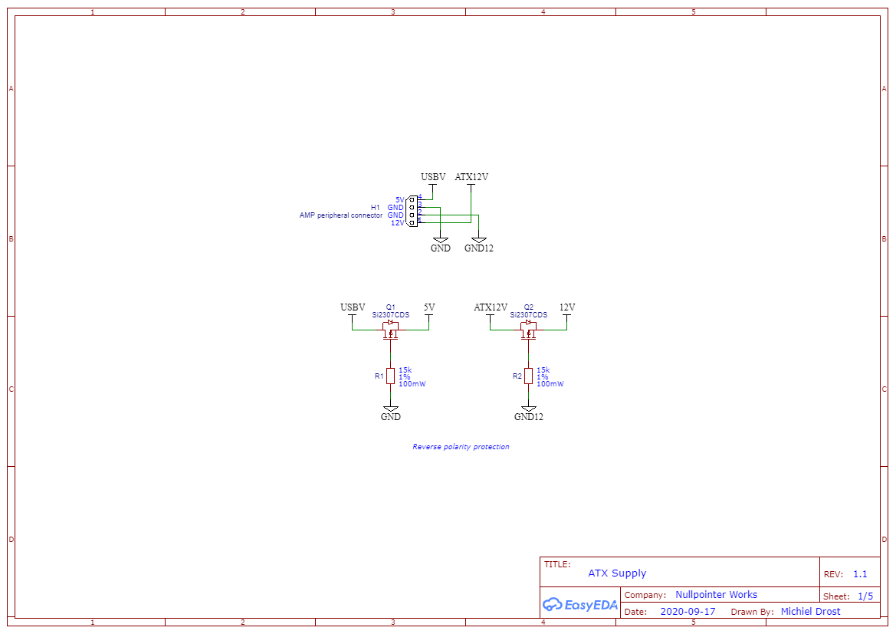
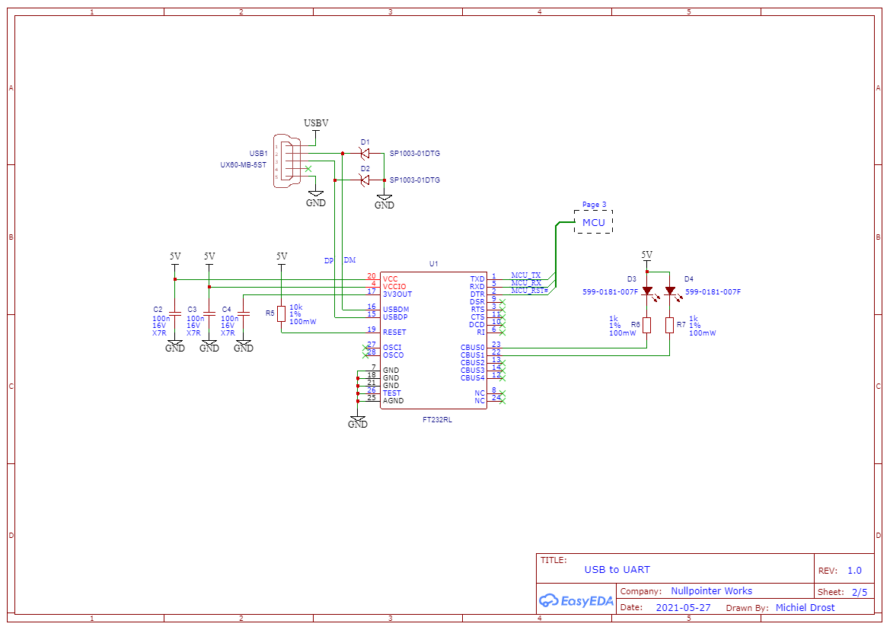
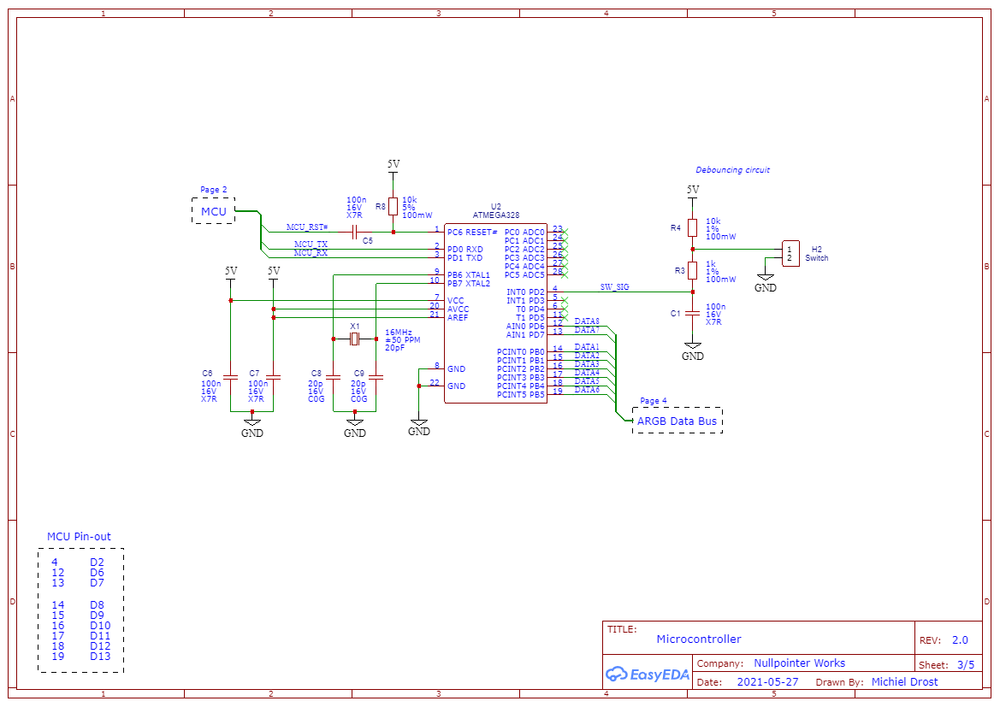
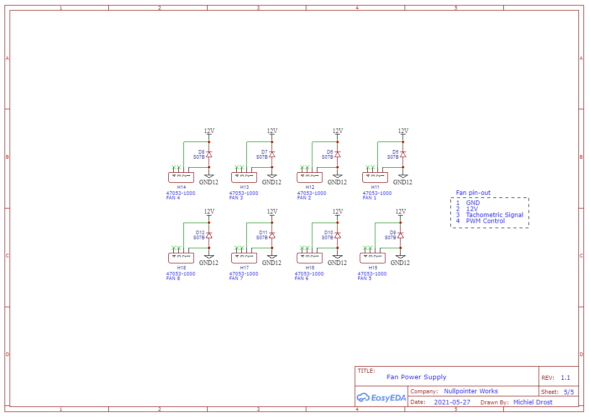
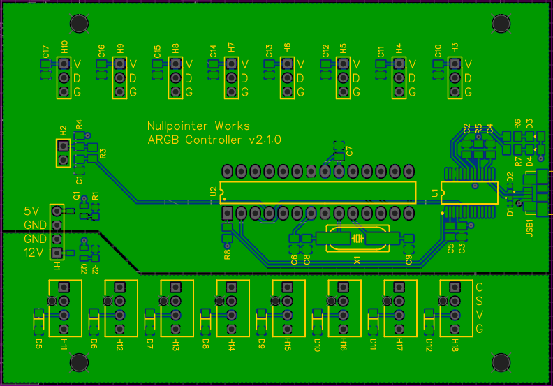
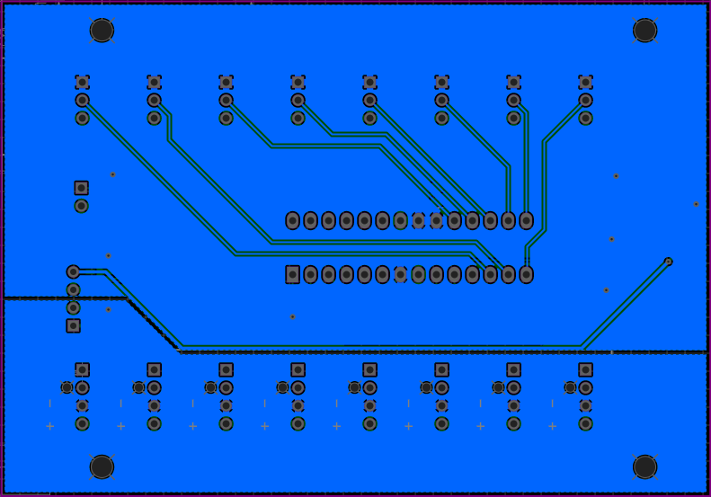

For the majority of people that own a computer treat it as nothing more than a fancy box. A tool that breaks often and is always a hassle to update or kept up to speed. They use it to check their e-mails, view and print documents, update their socials and perhaps play a game of solitair. However, in the eyes of an enthusiast it's not just a fancy box, nor an over-powered calculator. It's a piece of furnature that requires the same love and care like anything else in the household.
In particular the gaming community is expressing this love in a way similar to the people tuning their car's performance and looks. When you search online for water-cooled PCs you find images of hardline tube cooling systems with colorful coolant and lots of lighting and cable wiring matching in color to fit the theme.
Mind you I'm not a hardcore PC tuner, but I do enjoy tinkering when I have the oppertunity. One of those opportunities had risen when I was building my new PC. The new case has plenty of room for future upgrades and eight fan mounting points. Since I had some multicolor fans laying around, I thought it be fun to have those installed. Unfortunately, the original controller for those fans was lacking so I opted to make my own.

Reviewing my options I stumbled on a library available for the Arduino named "FastLED" that allows for controlling addressable LEDs. Good stuff, since the LEDs inside the multicolor fans are addressable red, green and blue(RGB) LEDs. I'm not sure exactly which product series they used, but I suspect they are WS2812B. The WS2812 are a popular choice in RGB strips and are consealed in a reasonably sized package. Having checked, it turns out the fan's enclosure has a LED strip glued inside to form a circle.
The Arduino development platform primarely utilize AVR microcontrollers and among the most popular, the Mega328, has attained a large code base. Arduino has made development for these microcontrollers very easy with their programming software and has made the AVR family quite popular.
The FastLED library can allocate a single pin for sending data to an addressable LED. All other LEDs on the strip have their data input daisy-chained together on the output of the previous. Only the first LED in the chain needs to be informed on what behaviour the others are to display. So to control eight RGB fans I need 8 digital pins, one for each LED strip. The Mega328 has 10 digital I/O pins and 5 analog pins that can be configured to be inputs, or digital outputs. To signal the controller to step to the next color pattern I need to ensure I keep at least one interrupt-capable pin as an input.
To really complete the project I need an enclosure to protect the circuitry. Since 2.5 inch drive mounting points are very common nowadays it would be nice if the controller can be mounted in an open slot. But that's completely optional. I own a Creality Ender-3 3D-printer so I can print the enclosure right here at my workspace.
In the schematic below I've drawn an AMP connector to supply the controller with power. The vast majority of power supplies will have such a connector available. The reverse polarity protection is optional, but I've added it in for good measure. You could opt for a SATA power connector instead if you feel like leaving AMP in a museum.
Next up is the USB connection. I want to be able to upload code to the device with as much ease as possible. This is accomplished using an FT232 integrated circuit (IC). It translates the USB communication protocol to UART which the microcontroller understands. I've added two LEDs to indicate when communication is happening. These are available on pin 22 and 23 by default on a fresh FT232 IC. The USB lines have SP1003 transient suppression diodes to help protect against electrostatic discharge events. This could be, for example, someone touching the bare circuit board while not properly grounded or a power spike from the power supply unit. The RX, TX and DTR(Data Terminal Ready) signal lines will go to the microcontroller.
Hooking up the microcontroller is pretty straight forward. The RX, TX and DTR will go to pin 1, 2 and 3 of the Mega328. Remember to swap the RX and TX lines between the two IC's. When someone is transmitting(TX) the other is recieving(RX), and visa versa. Pin 12 through 19 will serve as data lines for the ARGB strips. Pin 4 is an interrupt-capable pin which I'll hook up to a switch. You could hook up the switch directly, but I really recommend using a debouncing circuit.
The data lines from the Mega328 will each branch off to a 3-pin header. Two of those pins are for power and ground bypassed with a capacitor to reduce some noise.

Lastly, the fans get their 12 volts directly from the PC's power supply unit. We're not going to track or modify the fan's speed. The fans are an inductive load so I added flyback diodes to protect against voltage spikes.
The only through-hole(TH) components on the PCB are headers and the Mega328, everything else are surface-mounted devices(SMD). I decided on TH instead of SMD for the microcontroller to make maintenance easier. This version does not have an in-system programming(ISP) interface so you can't burn a bootloader into the microcontroller directly. I may add this in future revisions. The location of the Mega328 will be populated by a 28-pin insertion socket.
To isolate the 12V and 5V section I made sure the fans and ARGB header have their own copper planes on the PCB. The the common powerlines seperate as well, so it's the responsibility of the power supply unit to manage the power output. The four large non-plated drill holes are the mounting holes that should match the dimensions of a 2.5-inch drive.
The bottom layer is simple enough. There are no components placed and is just for soldering the TH components.
I'll not be etching the PCB myself but outsource it to Aisler instead. They have a factory situated in Germany which is convenient for me living in the Netherlands. Note that I'm not affiliated to Aisler.